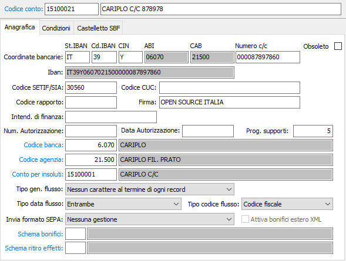
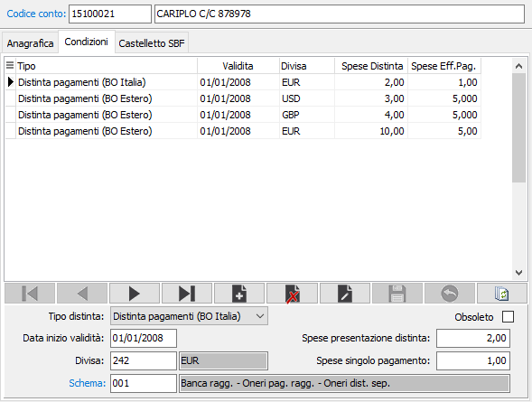
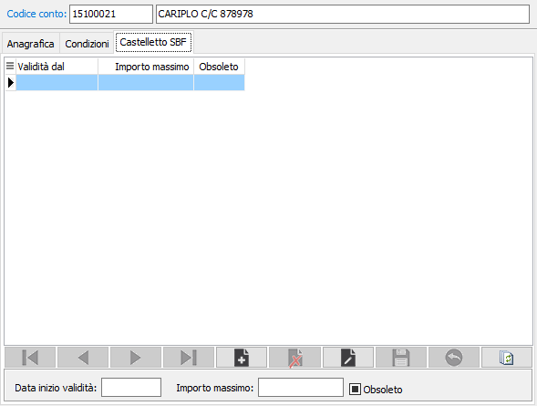

Conti correnti
La tabella consente di memorizzare gli estremi dei conti correnti bancari dell'azienda utente di OS1. Serve per l'emissione e per la contabilizzazione delle distinte di presentazione effetti attivi all’incasso, per la corretta generazione del floppy disk Ri.Ba, e per l’addebito di ricevute bancarie e/o bonifici fornitori ai vari conti correnti aziendali. I codici dei conti correnti aziendali possono essere memorizzati nelle anagrafiche clienti o fornitori per indicare su quale conto corrente deve essere operato l’addebito o l’accredito, oppure inseriti interattivamente all’atto della registrazione delle fatture d’acquisto.

CODICE CONTO: codice alfanumerico di 8 caratteri che individua il conto corrente. Deve coincidere con il corrispondente codice del piano dei conti. Sul campo sono attive le funzioni di ricerca sulla tabella stessa.
DESCRIZIONE: campo alfanumerico di 50 caratteri per descrivere il conto corrente bancario.
COORDINATE BANCARIE
STATO IBAN: codice dello stato assegnato dalla banca.
CHECKDIGIT IBAN: codice di controllo assegnato dalla banca.
ABI: codice ABI della banca specificata successivamente. In sola visualizzazione.
CAB: codice CAB dell'agenzia bancaria specificata successivamente. In sola visualizzazione.
NUMERO C/C: campo alfanumerico di 12 caratteri per inserire il numero del conto corrente bancario.
CIN: codice di controllo assegnato dalla banca.
IBAN: Indica il codice IBAN del conto corrente; nel caso di conti correnti con stato IBAN "IT" o "SM" viene calcolato automaticamente in base ai campi precedenti, altrimenti può essere inserito manualmente.
CODICE SETIF: campo alfanumerico di 5 caratteri per inserire l'eventuale codice SIA del Servizio Elettronico Trasferimento Interbancario Fondi. Tale codice viene assegnato dalla Società interbancaria per Automazione.
CODICE CUC: Indicare l'identificativo univoco CUC utilizzato per i flussi SEPA
CODICE RAPPORTO: campo alfanumerico di 6 caratteri per inserire l’eventuale codice identificativo del rapporto per la presentazione delle Ri.Ba. Viene assegnato dall'istituto di credito.
FIRMA: campo alfanumerico di 20 caratteri per l’eventuale inserimento del nominativo o della sigla con la quale l'azienda è stata autorizzata dall'Istituto di credito ad emettere Ri.Ba.
INTENDENZA FINANZA: campo alfanumerico di 15 caratteri per l’eventuale indicazione dell'Intendenza di Finanza che ha rilasciato l'autorizzazione per l'emissione delle tratte autorizzate.
NUM. AUTORIZZAZIONE: campo alfanumerico di 10 caratteri per l’eventuale inserimento del numero dell'autorizzazione all’emissione di tratta rilasciata dall'Intendenza di Finanza.
DATA AUTORIZZAZIONE: campo data per indicare la data di rilascio dell'autorizzazione da parte dell'Intendenza di Finanza.
PROGRESSIVO SUPPORTI: campo numerico destinato a contenere il numero progressivo dei supporti magnetici (floppy disk) consegnati all'istituto di credito per l'emissione delle Ri.Ba. Il campo è gestito automaticamente dal modulo Gestione Effetti Attivi.
CODICE BANCA: codice numerico di 5 caratteri, presente nella tabella Banche/Agenzie, per collegare il conto corrente in esame alla propria banca. Sul campo sono attive le funzioni di vista sulla tabella banche.
CODICE AGENZIA: codice numerico di 5 caratteri, presente nella tabella Banche/Agenzie, per collegare il conto corrente in esame alla propria agenzia bancaria. Sul campo sono attive le funzioni di ricerca sulla tabella agenzie bancarie, limitatamente alle agenzie della Banca indicata al campo precedente.
CONTO PER INSOLUTI: codice alfanumerico, presente nella tabella Sottoconti, che individua il conto contabile utilizzato dal programma di immissione prima nota contabile per l’addebito degli insoluti pervenuti sul conto corrente in esame. Sul campo sono attive le funzioni di ricerca (F9) all’interno del piano dei conti.
TIPO GEN. FLUSSO: usato nella generazione del floppy RI.BA, definisce la gestione del carattere di separazione; valori possibili: nessun carattere di separazione, caratteri di separazione al termine di ogni record, caratteri di separazione al termine di ogni flusso, caratteri di separazione al termine di ogni blocco.
TIPO DATA FLUSSO: Definisce con quale data deve essere generato il flusso elettronico (bonifici Italia). E' possibile scegliere fra tre possibili alternative:
Entrambe le date: saranno inserite sia la data valuta che la data esecuzione in base al tracciato record.
Data valuta: sarà utilizzata solo la data valuta
Data esecuzione: sarà utilizzata solo la data esecuzione
TIPO CODICE FLUSSO: Definisce quale tipo di codice del cliente deve essere utilizzato per generare il flusso elettronico Ri.Ba. E' possibile scegliere tra due possibili alternative:
Codice fiscale (se tale campo non è compilato sarà utilizzata la Partita IVA)
Partita IVA (se tale campo non è compilato sarà utilizzato il Codice fiscale)
INVIA FORMATO SEPA: Definisce le modalità di generazione del file in caso di flusso SEPA:
Nessuna gestione
Invio file txt compatibile SEPA (obsoleto)
Invio file XML SEPA CBI
Invio file XML SEPA ISO 20022
ATTIVA BONIFICI ESTERO XML: Consente l'invio dei bonifici esteri (a favore di fornitori in paesi non aderenti alla SEPA oppure in divisa diversa dall’Euro) in formato XML secondo lo standard SEPA CBI (casella con segno di spunta).
SCHEMA BONIFICI: E' possibile definire lo schema di contabilizzazione da utilizzare per i bonifici a fornitori, se si inserisce in questa pagina vale per tutti i tipi di distinta e sarà utilizzato per tutte le condizioni. Sul campo sono attive le funzioni di ricerca (F9) sulla tabella Schemi di contabilizzazione.
SCHEMA RITIRO EFFETTI: E' possibile definire lo schema di contabilizzazione da utilizzare per il ritiro effetti dei fornitori, se si inserisce in questa pagina vale per tutti i tipi di distinta e sarà utilizzato per tutte le condizioni. Sul campo sono attive le funzioni di ricerca (F9) sulla tabella Schemi di contabilizzazione.
OBSOLETO: flag attivabile dall’utente per inibire il possibile utilizzo dell’elemento di tabella in esame nelle successive transazioni.
La pagina Condizioni consente di gestire gli oneri bancari relativi ai pagamenti a fornitori; da questa sezione è possibile gestire, per tipo distinta (bonifici Italia, bonifici estero o ritiro effetti), sia gli oneri per singolo pagamento che eventuali oneri globali a livello di distinta. Il codice SCHEMA potrà essere differenziato a livello di condizioni.

La pagina Castelletto SBF consente di memorizzare il valore massimo del castelletto RIBA assegnato a ciascuna banca; in base alla data di validità, in fase di elaborazione distinta il valore indicato viene proposto automaticamente (nella colonna “Importo massimo”).
